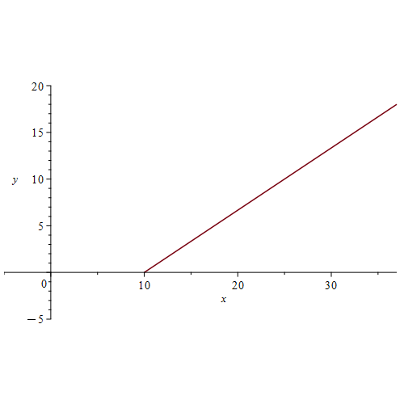
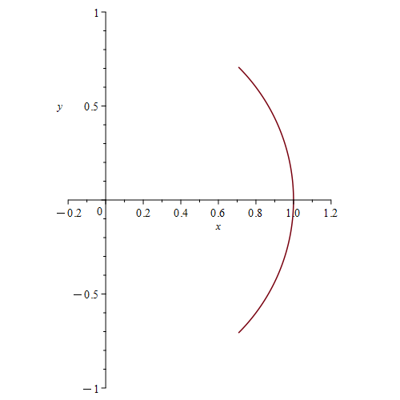
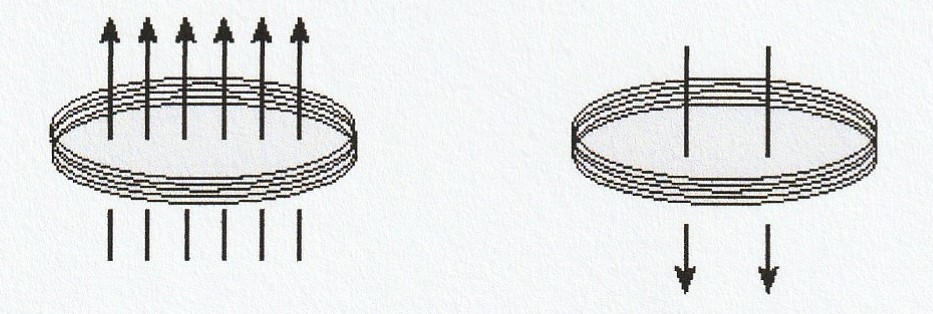
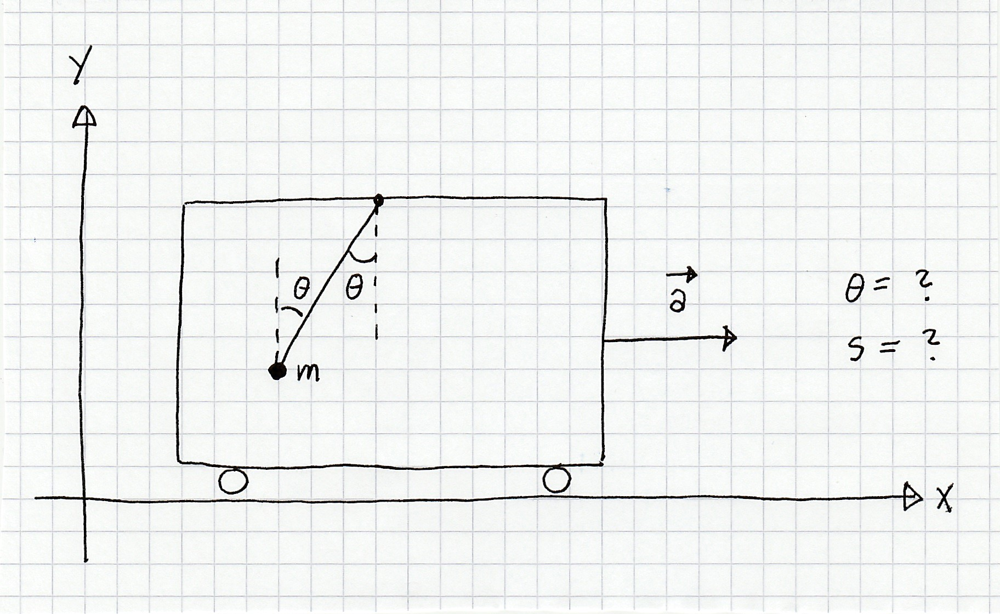
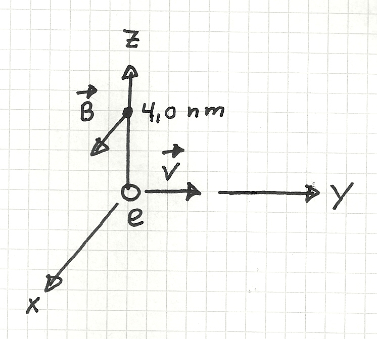
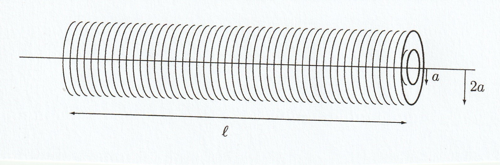

Fysikk
Denne siden samler fysikkprøvene fra 2024–2026. Hver prøve ligger i en egen nøstet fane. Regn først på papir og skriv deretter svarene i feltene. Bruk pi, sqrt(...) og eksakt brøk når oppgaven ber om et uttrykk. For numeriske svar er enheten skrevet ved feltet; ikke skriv enheten i selve feltet.
Når ikke annet er oppgitt, brukes \(g=9.81\,\mathrm{m/s^2}\), \(\varepsilon_0=8.854\cdot10^{-12}\,\mathrm{F/m}\), \(\mu_0=4\pi\cdot10^{-7}\,\mathrm{H/m}\), \(k_e=8.99\cdot10^9\,\mathrm{Nm^2/C^2}\), \(e=1.60\cdot10^{-19}\,\mathrm C\), \(m_e=9.11\cdot10^{-31}\,\mathrm{kg}\) og \(m_p=1.67\cdot10^{-27}\,\mathrm{kg}\). Fet skrift og hake betyr vektorer.
Oppgave 1 — bevegelse i planet
En partikkel beveger seg i \(xy\)-planet med konstant akselerasjon \(\mathbf a=6\hat{\mathbf x}+4\hat{\mathbf y}\). Ved \(t=0\) er \(\mathbf v(0)=\mathbf0\) og \(\mathbf r(0)=10\hat{\mathbf x}\). Bestem \(\mathbf v(t)\), \(\mathbf r(t)\) og ligningen \(y=y(x)\) for banen, og skisser banen.

Oppgave 2 — kranlast
En last på \(2.00\) tonn løftes av en kran. Finn snordraget når akselerasjonen er henholdsvis \(1.20\,\mathrm{m/s^2}\) oppover, null og \(1.20\,\mathrm{m/s^2}\) nedover.
Oppgave 3 — konservativ kraft
En partikkel påvirkes av \(\mathbf F(x,y)=y^3\hat{\mathbf x}+3xy^2\hat{\mathbf y}\). Bestem en potensiell energi \(E_p(x,y)\) med null additiv konstant. Partikkelen går mot klokken langs enhetssirkelen fra \(\mathbf r_1=(\hat{\mathbf x}-\hat{\mathbf y})/\sqrt2\) til \(\mathbf r_2=(\hat{\mathbf x}+\hat{\mathbf y})/\sqrt2\). Finn arbeidet utført av \(\mathbf F\), og tegn den orienterte partikkelbanen.

Oppgave 4 — harmonisk svingning
En kloss med \(m=1.0\,\mathrm{kg}\) og fjærstivhet \(k=36\,\mathrm{N/m}\) oppfyller \(m\ddot x=-kx\). Bestem \(x(t)\) når \(x(0)=0\) og \(\dot x(0)=0.50\,\mathrm{m/s}\).
Oppgave 5 — bølge på streng
La \(y(x,t)=(1.0\,\mathrm{cm})\sin((2.5\,\mathrm{rad/m})x+\omega t+\phi_0)\) ha fasefart \(6.0\,\mathrm{m/s}\). Bestem perioden og fasekonstanten når \(y(0,0)=0.5\,\mathrm{cm}\) og \(y_t(0,0)<0\). Oppgi \(0\le\phi_0<2\pi\).
Oppgave 1 — parallellplatekondensator
En parallellplatekondensator har \(d=0.10\,\mathrm{mm}\), \(A=4.0\cdot10^{-4}\,\mathrm{m^2}\) og dielektrisitetskonstant \(\kappa=2.0\). Den lagrede energien er \(U_E=1.0\,\mu\mathrm J\). Bestem ladningen og feltstyrken mellom platene.
Oppgave 2 — tre punktladninger
Tre positive punktladninger ligger på \(x\)-aksen: \(q_1=25\,\mu\mathrm C\) ved \(x=0\), \(q_2=10\,\mu\mathrm C\) ved \(x=2\,\mathrm m\) og \(q_3=20\,\mu\mathrm C\) ved \(x=3\,\mathrm m\). Bestem kraften på \(q_3\), feltet ved \(x=4\,\mathrm m\), og fluksen ut av en kule med sentrum ved \(x=5\,\mathrm m\) og radius \(4\,\mathrm m\). Positive fortegn betyr \(+\hat{\mathbf x}\) eller utadrettet fluks.
Oppgave 3 — uniformt ladet kule
En ikke-ledende kule med radius \(R=0.10\,\mathrm m\) har total ladning \(Q=20\,\mathrm{mC}\), symmetrisk fordelt i volumet. Bestem feltstyrken i \(\mathbf r_1=(2,2,2)\,\mathrm m\). En partikkel med \(m=6.0\cdot10^{-6}\,\mathrm{kg}\) og \(q=2.0\,\mu\mathrm C\) slippes fra ro ved \(0.30\hat{\mathbf x}\,\mathrm m\); bestem hastighetsvektoren langt borte. Bevegelsen går i \(+\hat{\mathbf x}\)-retning. Inne i kula er \(\mathbf E=b\mathbf r\); finn \(b\) og ladningstettheten \(\rho\). Skisser også de radielle, utadrettede feltlinjene utenfor kula.
Oppgave 1 — felt fra rett leder
En lang rett leder ligger langs \(z\)-aksen med strøm \(I=+22\,\mathrm A\). Tegn feltlinjene i \(xy\)-planet og bestem retningen med høyrehåndsregelen. En partikkel med \(q=2.0\,\mu\mathrm C\) er ved \(\mathbf r=4.0\hat{\mathbf y}\,\mathrm m\) og har \(\mathbf v=(0,2.0,3.0)\,\mathrm{km/s}\). Bestem kraften i nN.
Oppgave 2 — ladde partikler i magnetfelt
- Et proton går i en sirkel med radius \(0.80\,\mathrm m\) vinkelrett på \(\mathbf B=0.50\hat{\mathbf z}\,\mathrm T\). Finn periode, fart og sentripetalakselerasjon. Tegn banen, angi om bevegelsen går med eller mot klokken sett ovenfra, og begrunn retningen. (b) Et elektron med fart \(4.00\cdot10^3\,\mathrm{m/s}\) i et felt på \(1.25\,\mathrm T\) påvirkes av \(1.40\cdot10^{-16}\,\mathrm N\); finn begge vinklene mellom \(\mathbf v\) og \(\mathbf B\). (c) En ladning \(q=-1.0\,\mathrm{nC}\) i origo beveger seg med \(10^5\hat{\mathbf x}\,\mathrm{m/s}\). Finn feltet i \((0,-0.60,0.80)\,\mathrm{mm}\) i µT.
Oppgave 3 — Ampères lov
Tre lange ledere er parallelle med \(z\)-aksen. Kurven \(\alpha\) går mot klokken rundt leder 1 og 2, \(\beta\) går mot klokken rundt leder 1 og 3, og \(\gamma\) går med klokken rundt leder 2 og 3. Integralene er \(\oint_\alpha\mathbf B\cdot d\mathbf r=4\pi\cdot10^{-6}\,\mathrm{Tm}\) og \(\oint_\beta\mathbf B\cdot d\mathbf r= \oint_\gamma\mathbf B\cdot d\mathbf r=5.6\pi\cdot10^{-6}\,\mathrm{Tm}\). Positiv strøm er \(+\hat{\mathbf z}\). Finn strømmene.
Oppgave 1 — toroid
En toroidespole har \(\mu_r=2.0\cdot10^3\), \(N=50\), høyde \(h=1.0\,\mathrm{cm}\) og radier \(R_1=1.0\,\mathrm{cm}\), \(R_2=2.0\,\mathrm{cm}\). Finn selvinduktansen. Når fluksen gjennom hver vikling er \(1.0\,\mathrm{mWb}\), finn strømmen og den lagrede magnetiske energien.
Oppgave 2 — Ampère–Maxwells lov
I et område er \(\mathbf E=(\beta/\varepsilon_0)t\hat{\mathbf x}+ (\alpha/\varepsilon_0)t\hat{\mathbf z}\) og \(\mathbf B=\beta\mu_0[-y\hat{\mathbf x}+(x-z)\hat{\mathbf y}+y\hat{\mathbf z}]\), der \(\alpha=43\,\mathrm{A/m^2}\) og \(\beta=124\,\mathrm{A/m^2}\). Bestem strømtettheten.
Oppgave 3 — endret magnetfelt
En sirkulær spole har \(N=500\) og areal \(1.54\cdot10^{-2}\,\mathrm{m^2}\). Feltet endres fra \(0.060\hat{\mathbf z}\,\mathrm T\) til \(-0.020\hat{\mathbf z}\,\mathrm T\) på \(0.12\,\mathrm s\). Positiv retning er mot klokken sett fra \(+z\). Finn gjennomsnittlig \(z\)-komponent av \(\nabla\times\mathbf E\) og gjennomsnittlig ems. Kontroller retningen med Lenz’ lov.

Oppgave 4 — bevegelig kvadratisk sløyfe
En kvadratisk sløyfe med side \(s\) beveger seg mot høyre med fart \(v\) gjennom et område der \(\mathbf B=-B\hat{\mathbf z}\) og feltet er null utenfor. Positiv sløyferetning er mot klokken. Finn ems i tre situasjoner: (i) hele sløyfen er i det uniforme feltet, (ii) sløyfen er på vei ut slik at venstre side fortsatt ligger i feltet, og (iii) sløyfen krysser en horisontal feltgrense mens den beveger seg parallelt med grensen.
Oppgave 1 — arbeid og avstand
En partikkel med masse \(m=4\,\mathrm{kg}\) har konstant akselerasjon \(\mathbf a=3\hat{\mathbf x}-2\hat{\mathbf y}\), med \(\mathbf v(0)=\mathbf0\) og \(\mathbf r(0)=-5\hat{\mathbf x}\,\mathrm m\). Finn arbeidet utført fra \(t=1\) til \(t=4\,\mathrm s\) og avstanden fra origo ved \(t=4\,\mathrm s\).
Oppgave 2 — pendel i akselererende bil
En pendelkule med masse \(0.30\,\mathrm{kg}\) henger i en bil som akselererer med \(4.0\hat{\mathbf x}\,\mathrm{m/s^2}\). Snordraget er \(\mathbf S=S\sin\theta\hat{\mathbf x}+S\cos\theta\hat{\mathbf y}\). Tegn frilegemediagrammet, sett opp Newtons andre lov i begge retninger og finn \(S\) og vinkelen med vertikalen.

Oppgave 3 — fjær
En kloss med \(m=1.0\,\mathrm{kg}\) og \(k=81\,\mathrm{N/m}\) oppfyller \(m\ddot x=-kx\), med \(x(0)=0\) og \(\dot x(0)=0.54\,\mathrm{m/s}\). Bestem \(\ddot x(t)\) og endringen i potensiell energi fra \(t=0\) til \(t=\pi\,\mathrm s\).
Oppgave 4 — bølgeparametre
La \(y=(1.2\,\mathrm{cm})\sin(kx+\omega t+\phi_0)\) ha fasefart \(6.0\,\mathrm{m/s}\) og frekvens \(34\,\mathrm{Hz}\). Bestem \(k\), \(\omega\) og \(\phi_0\) når \(y_t(0,0)=1.0\,\mathrm{m/s}\) og \(y(0,0)<0\). Oppgi \(-\pi<\phi_0\le\pi\).
Oppgave 1 — kondensator
En parallellplatekondensator har \(d=0.10\,\mathrm{mm}\), \(A=4.0\cdot10^{-4}\,\mathrm{m^2}\), \(\varepsilon=2\varepsilon_0\) og ladninger \(\pm13\,\mathrm{nC}\). Finn lagret energi og potensialdifferansens størrelse.
Oppgave 2 — ladet metallkule
En metallkule med radius \(0.30\,\mathrm m\) og sentrum i origo har \(Q=2.0\,\mu\mathrm C\) på overflaten. La \(\mathbf r_1=0.80\hat{\mathbf x}\,\mathrm m\). Finn feltet i origo og ved \(\mathbf r_1\), potensialforskjellen \(V(\mathbf0)-V(\mathbf r_1)\), total feltenergi og fluksen ut av kuler med radius \(0.80\,\mathrm m\) og \(0.20\,\mathrm m\).
Oppgave 3 — ladd partikkel mellom plater
En partikkel med masse \(1.00\,\mathrm{mg}\) har ladning lik \(10^{10}\) elektroner. (a) Finn det vertikale feltet som holder den i ro. (b) Feltet lages av to uendelige plater \(L=0.10\,\mathrm m\) fra hverandre; finn \(|\sigma|\) og angi fortegnene: øvre plate er positiv, nedre negativ. (c) Nedre plate beholdes uendret. Finn den øvre, fortsatt positive platens nye \(\sigma\) slik at partikkelen får \(\mathbf a=-2.00\hat{\mathbf y}\,\mathrm{m/s^2}\). (d) Partikkelen slippes midt mellom platene; finn arbeid utført av tyngdekraft og elektrisk felt etter en forflytning \(L/4\) nedover.
Oppgave 1 — tre parallelle ledere
Tre lange ledere står på \(x\)-aksen med avstand \(3.0\,\mathrm{cm}\): ved \(x=0\) går \(2.0\,\mathrm A\) ut av arket, ved \(x=3.0\,\mathrm{cm}\) går \(5.0\,\mathrm A\) inn i arket, og ved \(x=6.0\,\mathrm{cm}\) går \(3.0\,\mathrm A\) ut av arket. Finn feltet midt mellom de to første lederne, samt divergens og curl der.
Oppgave 2 — velg Ampère-kurver
Fem ledere står vinkelrett på arket. Med strøm ut av arket som positiv ligger \(+5\,\mathrm A\) ved \((0,0)\), \(+15\,\mathrm A\) ved \((2,2)\), \(+8\,\mathrm A\) ved \((-2,1)\), \(-33\,\mathrm A\) ved \((2,0)\) og \(-6\,\mathrm A\) ved \((0,2)\). Beskriv på papir én medurs kurve \(C\) og én moturs kurve \(\gamma\) som begge gir \(\oint\mathbf B\cdot d\mathbf r=-80\pi\cdot10^{-7}\,\mathrm{Tm}\). Oppgi den orienterte omsluttede strømmen som kontroll.
Oppgave 3 — felt fra proton
Et proton går langs \(y\)-aksen med \(\mathbf v=4.0\cdot10^5\hat{\mathbf y}\,\mathrm{m/s}\). Idet det passerer origo, finn feltet ved \(\mathbf r=4.0\hat{\mathbf z}\,\mathrm{nm}\) og den magnetiske fluksen ut av kuleflaten \(r=4.0\,\mathrm{nm}\).

Oppgave 4 — elektron i skrått magnetfelt
Et elektron har \(\mathbf v(0)=10^7\hat{\mathbf x}\,\mathrm{m/s}\) i et uniformt felt med \(|\mathbf B|=\sqrt{50}\,\mathrm T\). Kraften ved \(t=0\) er \(8.0\hat{\mathbf y}\,\mathrm{pN}\) og \(B_x>0\). Finn \(\mathbf B\), radius og stigning per omdreining for heliksbanen. Vis at \(v_\perp=v_\parallel=v/\sqrt2\). Dersom \(\mathbf r(0)=-R\hat{\mathbf y}\), finn også \(\mathbf r(2T)\) etter to omløp.
Oppgave 1 — konsentriske spoler
To lange, tettviklede og konsentriske spoler har samme \(N\) og lengde \(l\). Radiene er \(2a\) og \(a\), og \(\mu_r=1\). Finn selvinduktansen \(L\) til den ytre spolen og gjensidig induktans \(M\). Positiv strømretning i begge spoler er mot klokken sett fra et punkt på aksen til høyre for spolene. Når \(I_1\) går i den indre og \(I_2\) i den ytre spolen, finn ems i den ytre når \(\dot I_1=-4\dot I_2\).

Oppgave 2 — rom- og tidsavhengig felt
En rektangulær sløyfe \(0\le x\le a\), \(0\le y\le b\), \(z=0\) er orientert mot klokken sett fra \(+z\). Feltet er \(\mathbf B=B_0\cos(ky-\omega t)\hat{\mathbf z}\). Finn \(\nabla\times\mathbf E\) og ems \(\varepsilon(t)\).
Oppgave 3 — bevegelig rektangulær sløyfe
En \(50.0\,\mathrm{cm}\times20.0\,\mathrm{cm}\) sløyfe i \(yz\)-planet har \(R=4.8\,\Omega\). Feltet er \(\mathbf B=(\beta+\alpha y)\hat{\mathbf x}\) med \(\beta=7.0\,\mathrm T\) og \(\alpha=0.80\,\mathrm{T/m}\). Sløyfen beveger seg med \(\dot y=3.0\,\mathrm{m/s}\). Positiv retning er mot klokken sett fra \(+x\). Finn indusert strøm; selvinduktans neglisjeres.
Oppgave 1 — initialverdiproblem
En partikkel oppfyller \(\ddot{\mathbf r}=(0,\gamma)\), \(\dot{\mathbf r}(0)=(\beta,0)\) og \(\mathbf r(0)=(0,0)\), der \(\gamma=8.0\,\mathrm{m/s^2}\) og \(\beta=3.0\,\mathrm{m/s}\). Finn \(\dot{\mathbf r}(t)\), \(\mathbf r(t)\), banefart og avstand fra origo ved \(t=1.0\,\mathrm s\), og baneuttrykket \(y(x)\).
Oppgave 2 — sirkelbevegelse
Et legeme med \(m=3.0\,\mathrm{kg}\) går i sirkel med radius \(R=4.0\,\mathrm m\) og konstant banefart \(v=22\,\mathrm{m/s}\). Senter er i origo. Finn totalkraften uttrykt med radiell enhetsvektor \(\hat{\mathbf r}\).
Oppgave 3 — arbeid fra to krefter
En partikkel påvirkes av \(\mathbf F\) og \(\mathbf G\), der det konservative feltet er \(\mathbf F=(3z,0,3x+2z)\). Den passerer origo med kinetisk energi \(1\,\mathrm J\) og senere \((2,3,1)\) med \(3\,\mathrm J\). Finn arbeidet utført av hver kraft.
Oppgave 4 — fjærsvingning
En kloss med \(m=1.0\,\mathrm{kg}\) og \(k=49\,\mathrm{N/m}\) oppfyller \(m\ddot x=-kx\). Bestem \(x(t)\) når \(x(0)=0.10\,\mathrm m\) og \(\dot x(0)=0.70\,\mathrm{m/s}\).
Oppgave 5 — bølge mot positiv x-retning
En harmonisk bølge går i positiv \(x\)-retning med \(\lambda=2.0\,\mathrm{cm}\) og \(v=8.0\,\mathrm{m/s}\). Videre er \(y(0,0)=-1.0\,\mathrm{mm}\) og \(y_t(0,0)=-2.0\,\mathrm{m/s}\). Bruk formen \(y=A\sin(kx-\omega t+\phi)\) med \(A>0\) og \(-\pi<\phi\le\pi\). Finn alle fire parametre. Fase og amplitude kontrolleres samlet, slik at de to initialbetingelsene må være oppfylt.
Oppgave 1 — to punktladninger
\(q_1=-9\,\mu\mathrm C\) ligger i origo og \(q_2=4\,\mu\mathrm C\) ved \(x=1.0\,\mathrm m\). Finn kraften på \(q_2\). Finn deretter punktet på \(x\)-aksen der en tredje, ikke-null ladning får null nettokraft.
Oppgave 2 — lineært elektrisk felt
Feltet er \(\mathbf E=(2x,-4y,2z)\) V/m. (a) Finn fluksen ut av kula \((x-5)^2+(y-6)^2+(z-7)^2=9\). (b) En ladning \(q=2.0\,\mathrm{mC}\) går fra \((5,6,7)\) til \((1,1,10)\) og bare elektrisk kraft virker. Finn \(\Delta E_k\). Begrunn flukssvaret ved å beregne \(\nabla\cdot\mathbf E\).
Oppgave 3 — ladet plan og sylinder
Et uniformt ladet \(xy\)-plan har \(\sigma=3.0\,\mathrm{C/m^2}\). La \(S\) være overflaten til sylinderen \(x^2+y^2\le5\), \(-2\le z\le2\), orientert utad. Finn total fluks og fluksen gjennom topp, bunn og side. Oppgi svarene som eksakte uttrykk i \(\varepsilon_0\), og begrunn dem med Gauss’ lov og feltets retning på hver delflate.
Oppgave 4 — kulekondensator
En kulekondensator har indre radius \(1.0\,\mathrm m\), ytre radius \(2.0\,\mathrm m\) og ladninger \(\pm4.0\,\mathrm{mC}\). Finn lagret energi og gjennomsnittlig avgitt effekt når den lades ut på \(2.0\,\mathrm s\).
Oppgave 1 — strømplan
I sjiktet \(-5.0\,\mathrm{mm}<z<5.0\,\mathrm{mm}\) er \(\mathbf B=\beta z\hat{\mathbf x}\) med \(\beta=3.0\,\mathrm{T/m}\). Finn strømtettheten i sjiktet og feltet over sjiktet. Feltet skal være kontinuerlig ved \(z=5.0\,\mathrm{mm}\).
Oppgave 2 — kraft fra sirkulær strømsløyfe
En sirkulær strømsløyfe i \(xy\)-planet har radius \(a=0.60\,\mathrm m\), sentrum i origo og moturs strøm \(I=10.0\,\mathrm A\) sett fra \(+z\). En ladning \(q=5.0\,\mathrm{nC}\) er ved \(0.80\hat{\mathbf z}\,\mathrm m\) med \(\mathbf v=10^6\hat{\mathbf y}\,\mathrm{m/s}\). Bruk \(\mathbf B(0,0,z)=\mu_0Ia^2[2(a^2+z^2)^{3/2}]^{-1}\hat{\mathbf z}\) og finn kraften.
Oppgave 3 — felt fra bevegelig ladning
En punktladning \(q=1.0\,\mathrm{nC}\) er ved \(t=0\) i origo og har \(\mathbf v=10^6\hat{\mathbf x}\,\mathrm{m/s}\). Finn magnetfeltet i \(\mathbf r=0.06\hat{\mathbf x}+0.08\hat{\mathbf y}\,\mathrm m\).
Oppgave 4 — sirkelbane i uniformt felt
En partikkel med \(q=1.0\,\mathrm{nC}\) og \(m=1.0\cdot10^{-17}\,\mathrm{kg}\) beveger seg i \(\mathbf B=-1.0\hat{\mathbf z}\,\mathrm T\). Ved \(t=0\) er \(\mathbf r=R\hat{\mathbf x}\) og \(\mathbf v=10^6\hat{\mathbf y}\,\mathrm{m/s}\). Finn \(R\), \(\omega\) og \(\mathbf r(t)\).
Oppgave 5 — kraft mellom leder og sløyfe
En uendelig vertikal leder med strøm \(I_1\) oppover ligger til høyre for en kvadratisk sløyfe med side \(a\) og strøm \(I_2\). Nærmeste side er avstand \(a\) fra lederen, fjerneste side avstand \(2a\). Strømmen i sløyfens nedre side går mot høyre. La \(\hat{\mathbf x}\) peke mot høyre og \(\hat{\mathbf z}\) ut av arket. Finn nettokraften på sløyfen.
Oppgave 1 — ems i sirkulær sløyfe
En sirkulær sløyfe med radius \(6.0\,\mathrm{cm}\) ligger i \(xy\)-planet. \(\mathbf B(t)=-(0.94t^2)\hat{\mathbf x}+(0.80t^3)\hat{\mathbf z}\) T. Sløyfen er orientert mot klokken sett ovenfra. Finn ems ved \(t=1.6\,\mathrm s\).
Oppgave 2 — spole og liten strømsløyfe
En solenoid har radius \(2.1\,\mathrm{cm}\), lengde \(0.55\,\mathrm m\) og \(600\) viklinger, akse langs \(z\) og \(\mu_r=1\). Positiv strømretning er mot klokken sett fra et punkt på \(+z\)-aksen. Inne i den ligger en én-viklings rektangulær sløyfe på \(1.1\,\mathrm{cm}\times1.4\,\mathrm{cm}\) med normal \(+\hat{\mathbf z}\). Finn gjensidig induktans. Når \(\dot I_1=-30\,\mathrm{A/s}\) i solenoiden og \(\dot I_2=12\,\mathrm{A/s}\) i sløyfen, finn \(\varepsilon_1\) og \(\varepsilon_2\); sløyfens selvinduktans kan neglisjeres.
Oppgave 3 — voksende kvadrat
Fire ledere danner et kvadrat i \(xy\)-planet med side \(s=vt\), der \(v=6.0\,\mathrm{m/s}\). Positiv retning er mot klokken sett fra \(+z\), og \(\mathbf B=0.24\hat{\mathbf x}-0.13\hat{\mathbf y}-0.55\hat{\mathbf z}\) T. Finn \(\varepsilon(t)\).
Oppgave 4 — platekondensator under opplading
En sirkulær platekondensator med radius \(a\) lades med strøm \(I\). \(z\)-aksen er symmetriakse og \(+\hat{\mathbf z}\) er positiv strømretning. Finn \(\nabla\times\mathbf B\) mellom platene.
Oppgave 5 — strømtetthet fra feltene
\(\mathbf E=(\alpha/\varepsilon_0)t\hat{\mathbf x}+ (\beta/\varepsilon_0)t\hat{\mathbf y}\) og \(\mathbf B=\beta\mu_0[z\hat{\mathbf x}-z\hat{\mathbf y}+ (y-x)\hat{\mathbf z}]\), der \(\alpha=98\,\mathrm{A/m^2}\) og \(\beta=44\,\mathrm{A/m^2}\). Finn \(\mathbf j\).